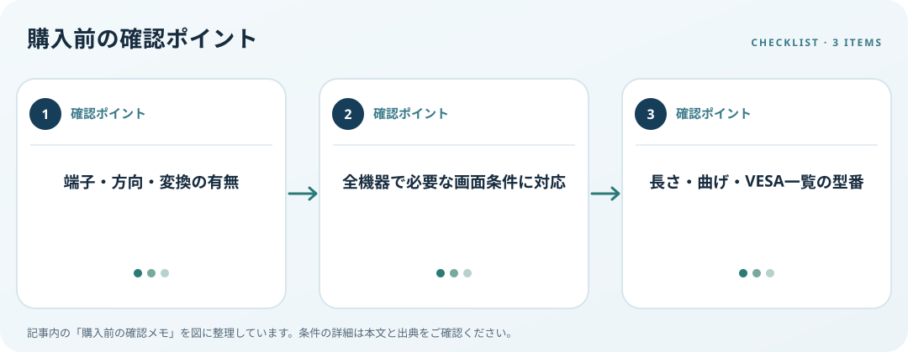

DisplayPort端子、方向、配線長、必要な画面条件とVESAの認証情報を確認します。この記事では仕様の確認順を整理します。

端子と接続方向を見る
PCやドックの出力とモニターの入力を確認し、フルサイズ、Mini DisplayPort、USB-C変換など経路を記録します。変換・アクティブケーブルは方向が指定される場合があるため、PCから画面へ信号を送る向きに対応するか仕様表を読みます。
必要な画面条件を照合
解像度、更新頻度、色設定、複数画面など必要条件を決め、PC・グラフィックス機能・ドック・ケーブル・画面の全てが対応するか確認します。ケーブルの規格名だけで接続後の性能は保証できません。メーカーが明記する機種別条件を優先します。
長さと認証を調べる
机上の配線経路を測り、端子に引張りや急な曲げがかからない長さを選びます。VESAは認証済みコンポーネントの公開一覧を用意しています。認証を判断材料にする場合はメーカー名や型番を一覧と照合し、他の接続機器の条件も併せて確認します。
購入前の確認メモ
- 端子・方向・変換の有無
- 全機器で必要な画面条件に対応
- 長さ・曲げ・VESA一覧の型番
この記事は出典の公開情報を購入前の確認項目に整理したもので、特定商品の使用・実測・レビュー・ランキング・価格・在庫の調査は行っていません。購入時には利用機器メーカーの最新仕様をご確認ください。
出典
- DisplayPort Certified Components — VESA（確認日: 2026-10-10）
- Multiple monitors — Microsoft（確認日: 2026-10-10）